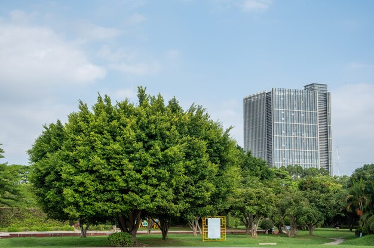
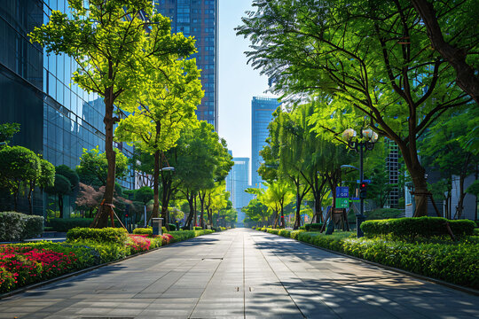

Kāpēc koki ir svarīgi? Pilsētas bez kokiem ir karstas, trokšņainas un mazāk pievilcīgas. Koki filtrē gaisu, samazina temperatūru vasarā un sniedz mājvielu putniem un kukaiņiem. Katrs stādīts koks ir investīcija veselīgākā vidē mums visiem.
Mūsdienu izaicinājumi. Pilsētas attīstība bieži vien nozīmē zaļo zonu zudumu. Mums ir nepieciešama viedāka plānošana, lai nodrošinātu, ka jaunas ēkas neaizsedz sauli un ka koki var brīvi augt, nesaskaroties ar infrastruktūru.


Kā tu vari palīdzēt? Jūs varat iesaistīties vietējās kopienas iniciatīvās, stādīt kokus savā mājā vai iestādē, vai vienkārši rūpēties par esošajiem koku stādiem. Maza darbība rada lielas izmaiņas.